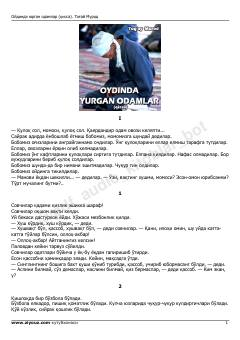

OYO'zbek qishlog'i hayoti va insoniy taqdirlar haqidagi ta'sirli qissa.
To'g'ay Murodning ushbu mashhur qissasida o'zbek qishlog'i hayoti, insoniy munosabatlar, ruhiy kechinmalar va sof muhabbat tarannum etiladi. Asar qahramonlarining o'ziga xos dunyoqarashi va taqdiri orqali milliy mentalitetimizning yorqin qirralari ochib beriladi.